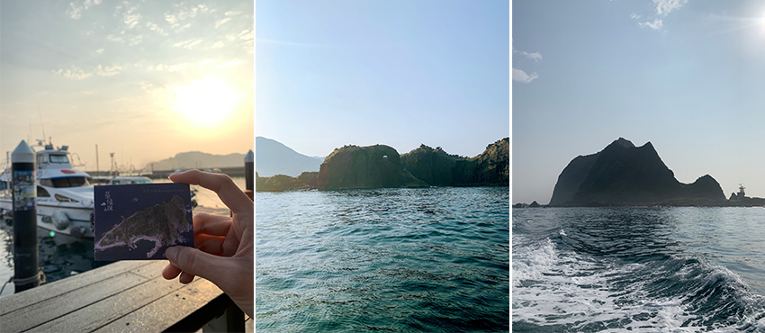
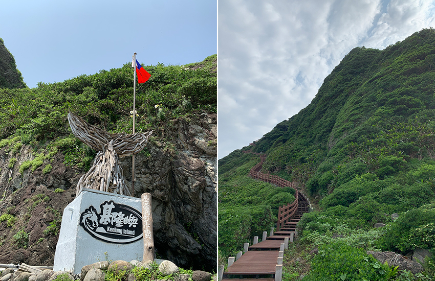
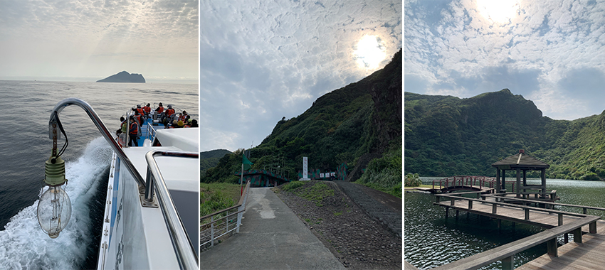
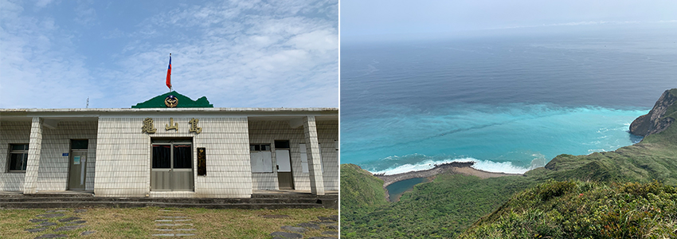

臺灣本島已經玩遍了嗎？不妨來場深度小旅行，登上無人島！臺灣東側外海的附屬島嶼，除了有綠島與蘭嶼之外，還有龜山島；北部外海亦有基隆嶼。兩大島嶼的共同點是：無人居住、有限定開放時間、每日登島人數限制、需預約登記。兩座島嶼登島，我都是選擇旅遊平台預訂，不僅省去瑣碎的申請手續，還有提供不同組合的套裝行程，依照自己的需求選擇方案；只要帶著一顆期待又興奮的心出發即可！
基隆嶼
開放時間：2023/4/1- 2023/10/31
每日限額：1,200/人
方案選擇：4合1行程（登島.繞島.上燈塔.繞巡象鼻岩）
集合地點：八斗子觀光漁港（碧砂漁港）
|  | ||
| 基隆嶼紀念船票。 | 象鼻岩。 | 基隆嶼。 |
07：00 提前到集合地點報到，領取船票後欣賞早晨寧靜的漁港。
07：30 準時出航，先拜訪象鼻岩巨石壯碩美景，再沿途繞島基隆嶼一圈。
08：30 抵達神祕小島基隆嶼，聽完導覽員的解說後，可到處探險拍美景。
11：30 港口集合搭船離島。
有臺灣龍珠之稱的基隆嶼，島上僅有兩條路線：往燈塔的登山步道（740M）及環海的海濱步道（460M）。小島約莫半小時即可走完，難得登島當然要挑戰登頂往燈塔一探究竟。
前往山頂燈塔的步道前半段，是整修過比較好走的木棧道，觀景亭後走的是石造階梯，路段陡又狹窄，路面損壞很多碎石；但登頂後一望無垠的美景，辛苦走上來也是值得的！
|  | ||
| 打卡點。 | 登山步道。 | |
龜山島
開放時間：2023/03/01-2023/11/30
每日限額：1800人，分四個時段，每個時段上限450人
方案選擇：登島.環繞龜山島.401高地攻頂
集合地點：烏石港
行程：航程約30分鐘-登島-環龜尾湖-登401高地-軍事坑道-環繞龜山島
|  | ||
| 出發前往神秘的島嶼。 | 島孤人不孤。 | 酩嘉亭。 |
上岸後離碼頭不遠處就被美景龜尾湖吸引，沿著湖邊走邊聽解說員講解文化歷史，參訪當時留下的村落、學校還有廟宇後，領隊帶領大家做暖身操，準備登上401高地。
稍作休息後，導覽員帶領我們走環湖步道邊解說生態環境，接著參觀軍事坑道，看了許多歷史見證物；願世界和平，不要有戰爭。
走完坑道後到碼頭集合乘上遊艇，繞龜山島一圈欣賞龜山八景，為這趟旅程畫下完美句點。
|  | ||
| 龜山島國民小學。 | 牛奶海。 | |
兩座島嶼各有迷人之處，是老少咸宜的好去處，為了保護生態資源都有採取總量管制，可讓旅人們自在的探險不必人擠人。兩者亦有步道可健行登頂，享受大自然的芬多精與海景；基隆嶼在不同的季節前往可看見不同的花季，而龜山島的面積又比基隆嶼大好幾倍，也有留下居民生活的遺跡，除了有較多的景點可參觀外，還可了解當地的地理歷史。還沒去過的人，不妨撥空朝聖，遠離城市喧囂，一探無人島的神秘面紗。